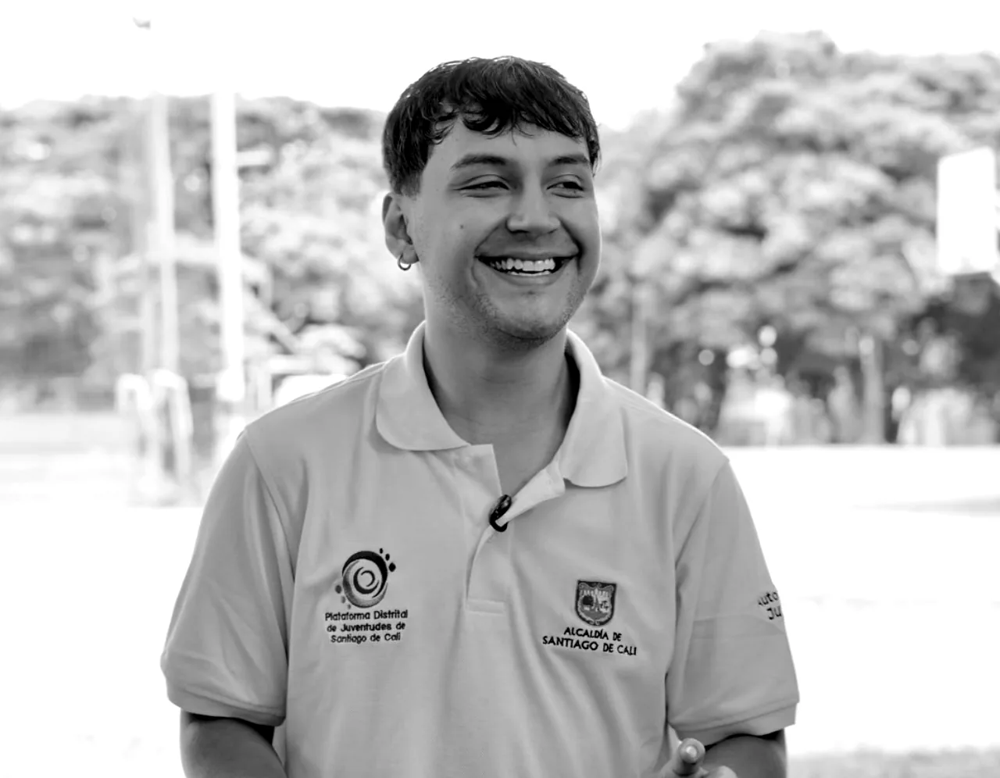
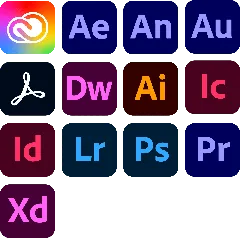
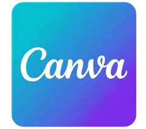
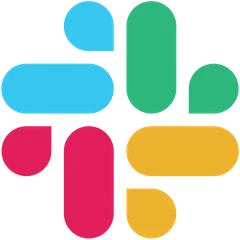

Comunicar con sentido.
Co-creo y acompaño espacios donde la comunicación no es solo un proceso lineal: se construye con el territorio y sus actores.
La comunicación no es un proceso solitario, es un tejido colectivo.

Mi camino empezó con una idea simple: las comunidades en contextos de conflicto necesitan algo más que informes, necesitan proyectos con sus propias voces.
Co-creo y acompaño espacios donde la comunicación no es solo un proceso lineal: se construye con el territorio y sus actores.
La comunicación no es un proceso solitario, es un tejido colectivo.

Busco activamente capacitarme para que el impacto de los procesos esté en coherencia con las necesidades técnicas que el territorio y los sectores aliados requieren.
También soy administrador público en formación, donde he aprendido procesos de gestión para la viabilidad y sostenibilidad de la incidencia social.
Trayectoria
Cuento con experiencia práctica en comunicación estratégica y gestión social, adquirida en organizaciones como el Consorcio Juntos por Colombia y la Fundación Herencia de Timbiquí, donde apoyé el diseño de planes de comunicación y la articulación de contenidos con comunidades del litoral Pacífico. También he participado en procesos de incidencia juvenil, coordinando comunicaciones y gestión social en espacios como la Asociación Colombiana de Juventudes y la Plataforma Distrital de Juventudes. Esta trayectoria me ha permitido desarrollar habilidades en producción de contenido, trabajo en equipo y comunicación con distintos actores.
Busco seguir aportando desde un espacio de prácticas en comunicación social.


